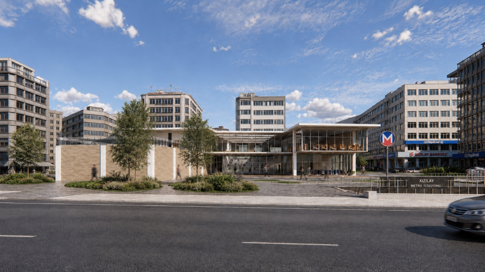
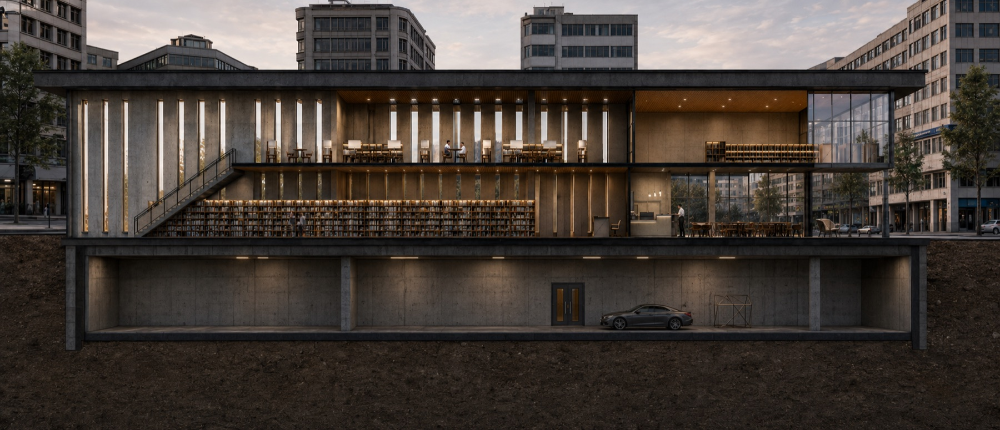
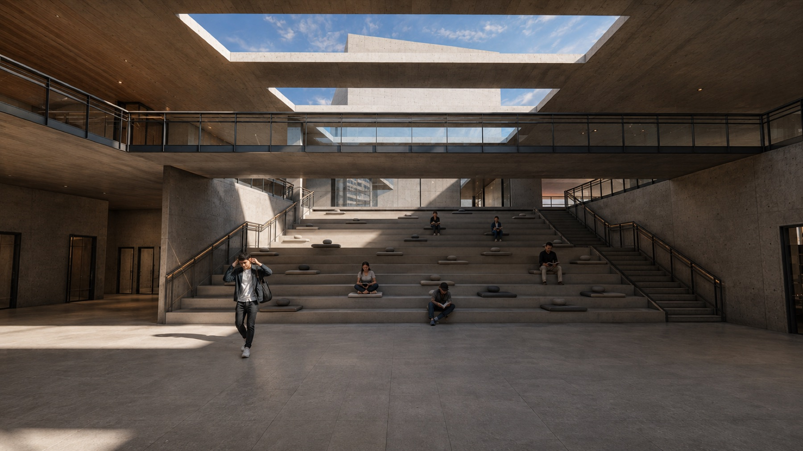
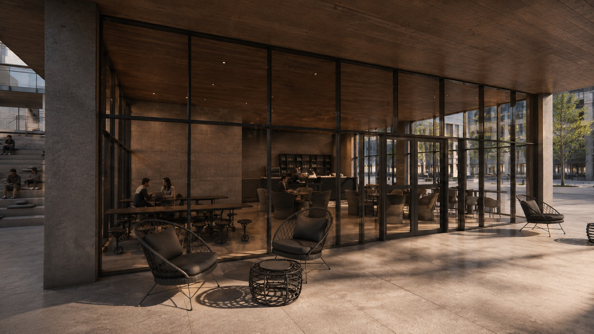

A02 · Library · Kızılay
A calm civic interior within Ankara's busiest center
A public library shaped by natural light, planted terraces, environmental performance, and direct engagement with the dense urban life of Kızılay.

Project idea
A public room for the center of Ankara
The project introduces a low, accessible civic building into the commercial density of Kızılay. Its public rooms open toward the city, while quieter reading and study spaces are organised around internal terraces, gardens, and controlled daylight.
The long roof and deep eaves give the library a clear urban presence without competing with its surroundings. Transparent corners reveal activity, while more solid walls protect the collection and create focused interiors.
Environmental logic
Light, shade, water, and planted roofs
High-level openings draw daylight deep into the gallery and reading areas. Roof overhangs block high summer sun while allowing lower winter light to enter. Planted terraces moderate the roofscape, and an integrated rainwater system supports non-potable uses and landscape irrigation.



